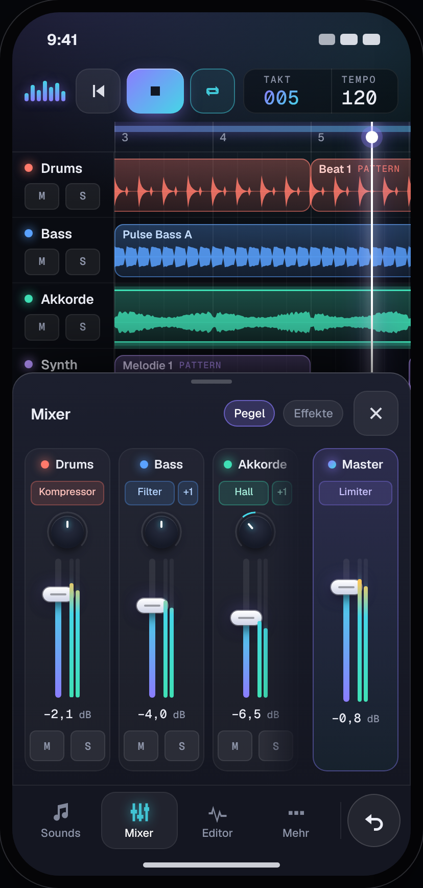
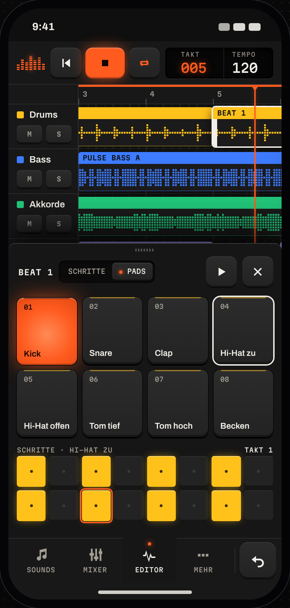
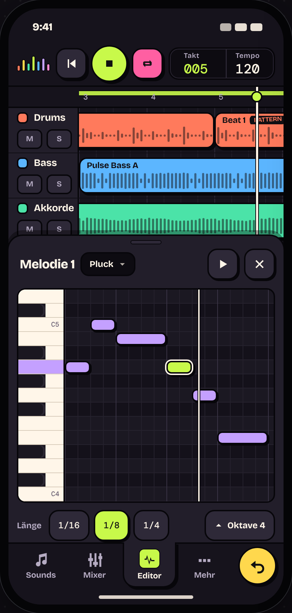
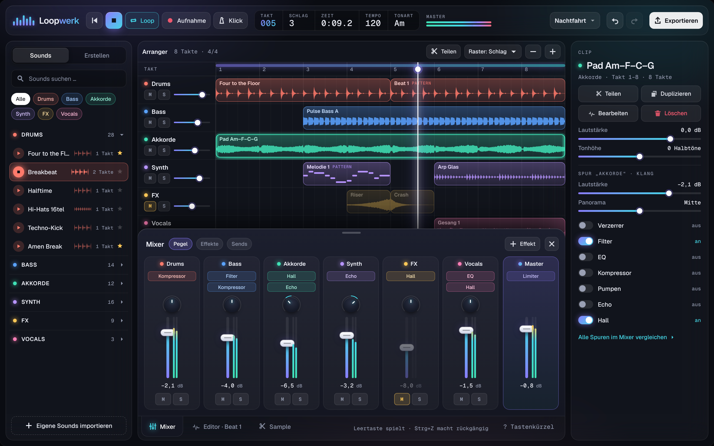
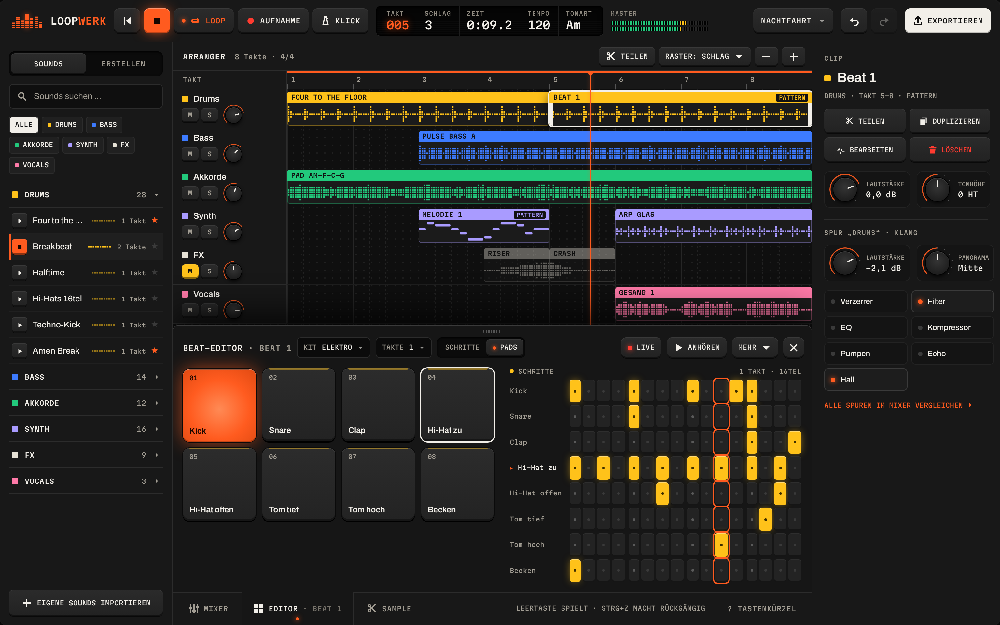
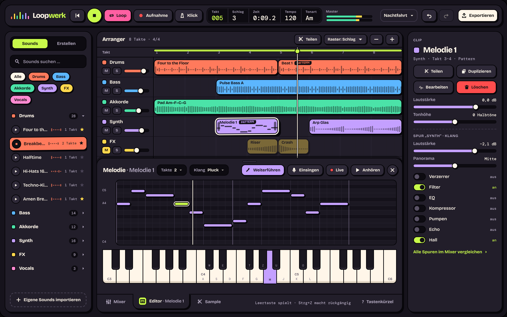

Nachtglas
Geist · Geist Mono
Ein ruhiges Nachtstudio hinter Rauchglas: dunkel, weich leuchtend, präzise wie ein Profi-Werkzeug, mit einem Hauch Aurora.
- Glas & Aurora
- Glow nur auf Aktivem
- Mixer-Schublade

Funktional, clean, modern, etwas verspielt, primär Darkmode. Alle drei Richtungen nutzen dasselbe kommende Layout (Deck oben, Arranger, unten eine Leiste mit Reitern, an der die Schubladen hängen) und zeigen je eine andere offene Schublade. Das Logo mit den Amplituden-Balken bleibt in allen erkennbar.
Geist · Geist Mono
Ein ruhiges Nachtstudio hinter Rauchglas: dunkel, weich leuchtend, präzise wie ein Profi-Werkzeug, mit einem Hauch Aurora.

Archivo · Martian Mono
Ein präzises Musikgerät aus Graphit und Gummi: grafisch, haptisch, mit LED-Punkten und genau einer Signalfarbe – wie ein Taschensynth auf dem Tisch.

Bricolage Grotesque · DM Mono
Ein freches Skizzenbuch voller Aufkleber: dicke Konturen, satte Bonbonfarben, harte Schatten – alles sieht aus, als könnte man es anfassen und verschieben.




Entwurf von ux-designer. Grundlage ist Wissen über Premium-Musik- und Pro-Tool-Oberflächen, keine Live-Recherche auf Pinterest oder Dribbble. Vergleich, Empfehlung und offene Fragen stehen in README.md im selben Ordner.